Chất lượng
Không kháng sinh, không cắt mắt tôm bố mẹ, hướng tới không xả thải.
ShrimpVet ESG Farm nuôi tôm thẻ chân trắng tại Gành Hào, Cà Mau theo quy trình khép kín: nước được lắng, xử lý và kiểm tra qua nhiều cấp trước khi vào ao, nước thải được giữ lại xử lý trước khi ra kênh.
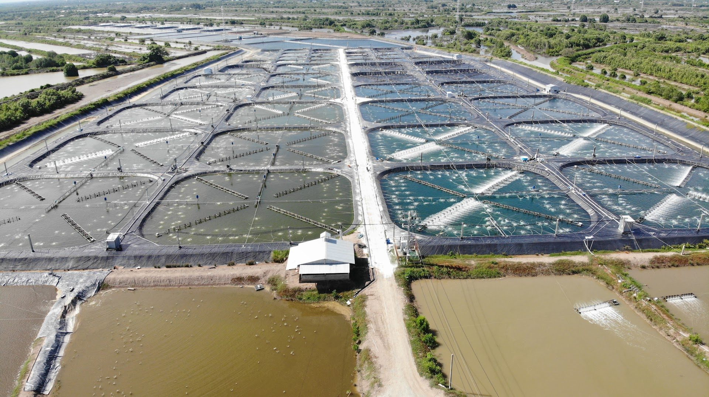
ShrimpVet ESG Farm là trang trại nuôi tôm thẻ chân trắng tại xã Gành Hào, tỉnh Cà Mau, trên diện tích gần 20 ha giáp kênh Rạch Cóc và kênh Chệt.
Trang trại được quy hoạch theo dòng chảy của nước: khu lấy nước và lắng lọc ở đầu nguồn, khu ao nuôi ở giữa, khu chứa và xử lý nước thải ở cuối. Mỗi ao có người phụ trách riêng, số liệu nuôi được ghi chép hằng ngày trên hệ thống số.
Chữ ESG trong tên thể hiện cách chúng tôi làm nghề: chất lượng con tôm phải đi cùng trách nhiệm với môi trường và cộng đồng.
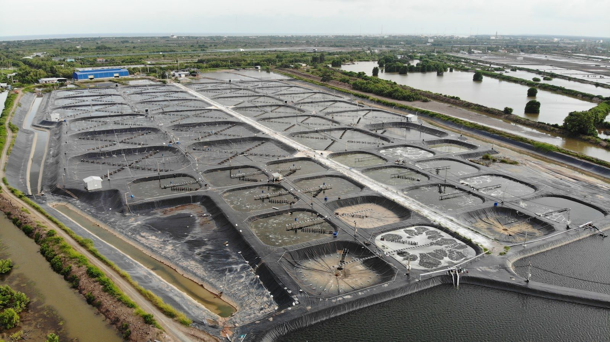
Phát triển mô hình nuôi tôm có thể mở rộng và chuyển giao cho thế hệ nhà sản xuất tôm tiếp theo: bền vững, hiệu quả và cạnh tranh toàn cầu.
Mục tiêu đến năm 2030Không kháng sinh, không cắt mắt tôm bố mẹ, hướng tới không xả thải.
Minh bạch toàn chuỗi, từ đàn tôm bố mẹ đến sản phẩm cuối cùng.
Hướng tới chứng nhận ASC, BAP và các tiêu chuẩn quốc tế.
Giảm phát thải carbon, phục hồi rừng ngập mặn, tuần hoàn khép kín.
Số hóa chuỗi sản xuất từ trại giống đến vùng nuôi, để truy xuất nguồn gốc đến từng ao.
Nước tốt quyết định phần lớn thành công của vụ nuôi. Vì vậy mỗi giọt nước vào ao đều đi qua cùng một quy trình, và mỗi ao đều được theo dõi bằng số liệu.
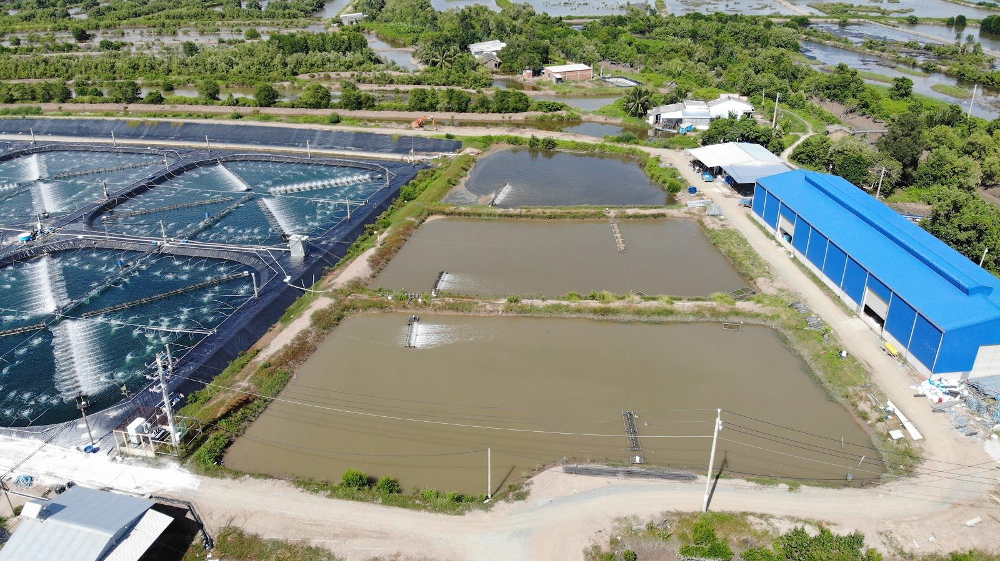
Nước từ kênh Rạch Cóc vào ao lắng thô, qua ao xử lý rồi lần lượt ba ao lắng tinh trước khi về ao sẵn sàng.
Nước ở ao sẵn sàng được đo các chỉ số chính, đạt ngưỡng mới được cấp cho ao nuôi.
Lượng thức ăn, pH, DO, NO2, TAN, độ kiềm, trọng lượng tôm được ghi trên hệ thống; chỉ số vượt ngưỡng sẽ được cảnh báo ngay.
Mẫu nước và tôm được gửi phòng xét nghiệm để kiểm Vibrio và các bệnh nguy hiểm bằng PCR.
Mỗi ao nuôi có một mã QR riêng. Khách tham quan quét mã tại ao để xem hồ sơ nuôi: tăng trưởng, thức ăn, chất lượng nước và kết quả xét nghiệm.
Xem sơ đồ trang trại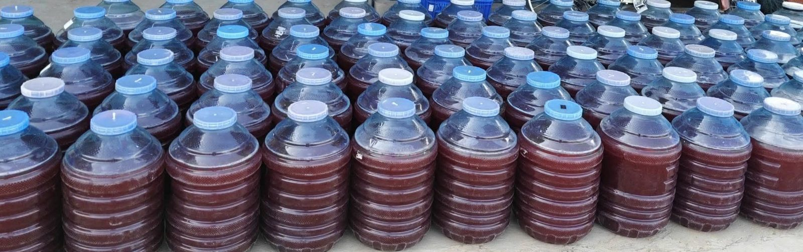
Chúng tôi nuôi tôm trên vùng đất ven biển nhạy cảm, nên bảo vệ nguồn nước và hệ sinh thái xung quanh là điều kiện để trang trại tồn tại lâu dài.
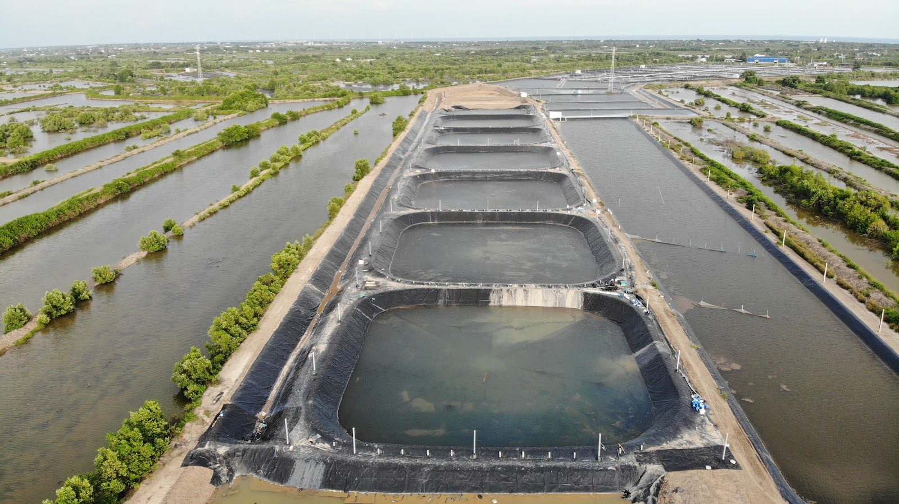
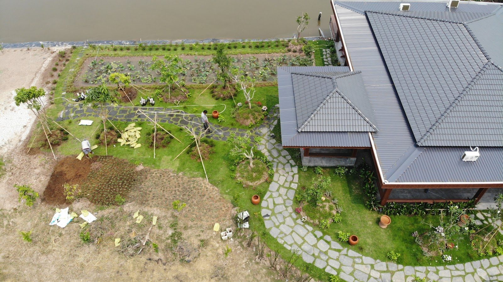
Xử lý và kiểm soát nguồn nước trước khi đưa vào ao nuôi.
Thu gom, xử lý nước thải và bùn thải theo quy trình; nước thải được giữ ở ao chứa thải trước khi ra kênh.
Ứng dụng vi sinh để quản lý môi trường ao, không sử dụng kháng sinh trong quá trình nuôi, hạn chế hóa chất không cần thiết.
Duy trì và phát triển thảm thực vật ven khu vực trang trại, hướng đến bảo vệ môi trường tự nhiên.
Mô hình ESG hướng tới một hệ thống khép kín, trong đó chất thải của khâu này trở thành nguồn lực cho khâu khác.
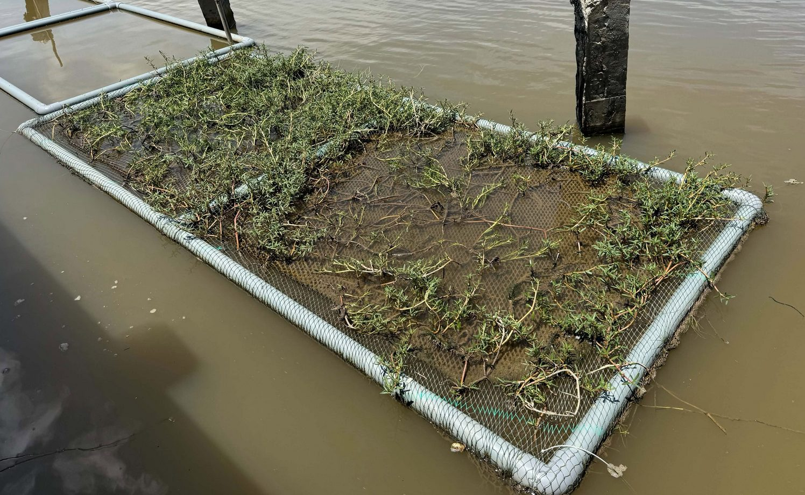
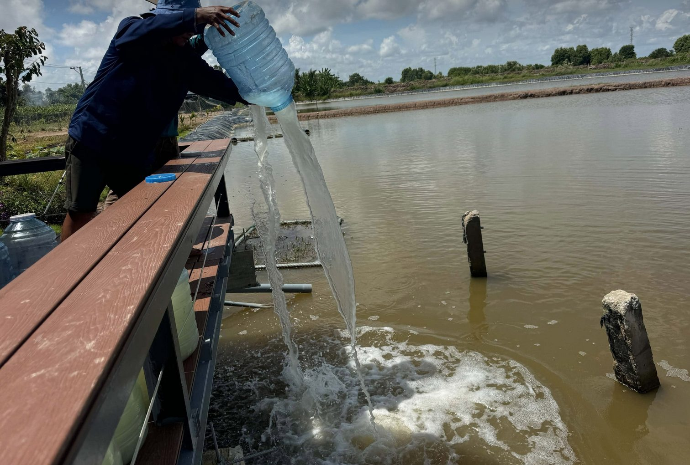
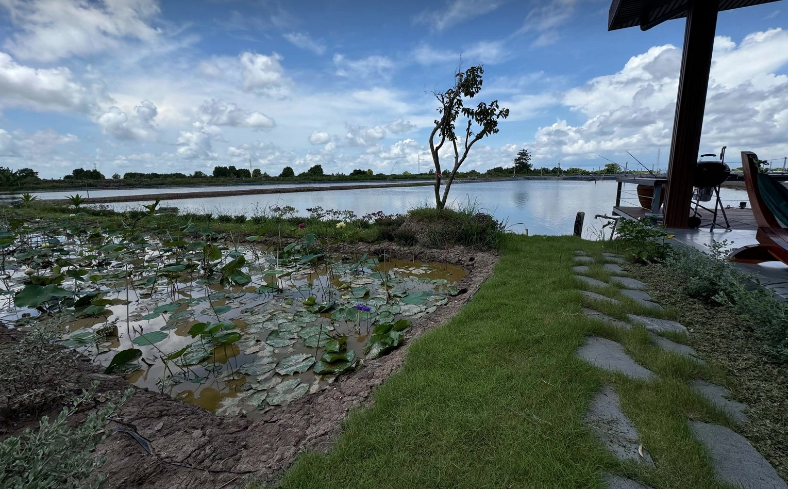
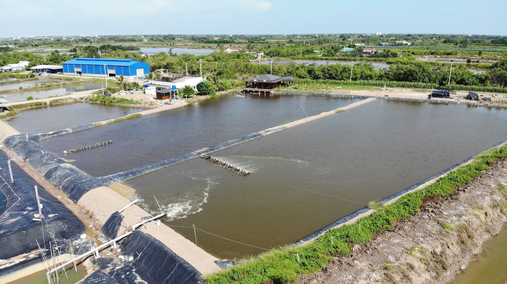
ESG Farm hướng đến hệ thống quản lý sản xuất minh bạch, truy xuất được thông tin, đáp ứng yêu cầu về an toàn sinh học, chất lượng sản phẩm và trách nhiệm môi trường.
Phát triển trang trại phải đi cùng bảo vệ môi trường, tuân thủ pháp luật và chia sẻ lợi ích với cộng đồng nuôi tôm tại địa phương.
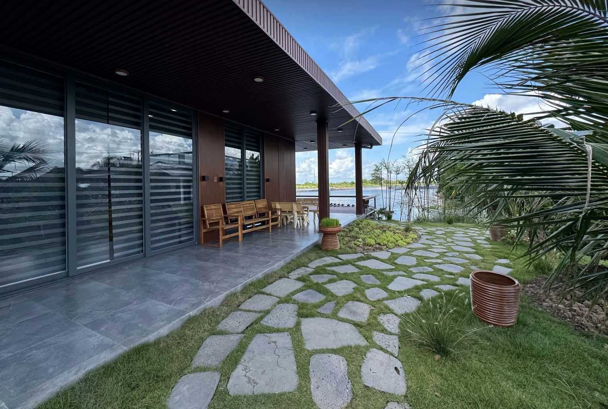
Nơi người nuôi tôm gặp gỡ, trao đổi kinh nghiệm và thực hành sản xuất tốt, phối hợp với các tổ chức khuyến nông của tỉnh.
Trải nghiệm mô hình kinh tế tuần hoàn tại trang trại, góp phần quảng bá hình ảnh tôm Cà Mau sạch và bền vững.
Chia sẻ dữ liệu xét nghiệm và quản lý dịch bệnh, cùng nghiên cứu, thử nghiệm các giải pháp nuôi mới thích ứng biến đổi khí hậu.
Giá thu mua tôm thẻ chân trắng tại khu vực, cập nhật hằng tuần kèm nguồn. Đây là giá tham khảo thị trường, không phải giá bán của trang trại.
Bảng giá tuần này đang được cập nhật.
Đăng nhập bằng Gmail đã được cấp quyền. Hệ thống nhận diện từng nhân viên và chỉ mở đúng phần việc của người đó.
Đối tác, khách hàng và đơn vị muốn tham quan trang trại vui lòng liên hệ trước để được sắp xếp.